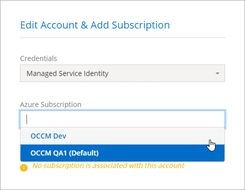
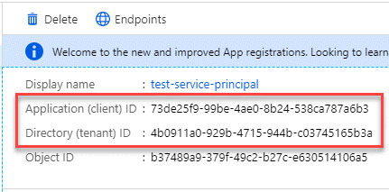

Demander de modifier un document
Demander de modifier un document Modifier sur GitHub
Modifier sur GitHub Guide des contributeurs
Guide des contributeursGestion des informations d’identification et des abonnements Azure pour BlueXP
Contributeurs
Lorsque vous créez un système Cloud Volumes ONTAP, vous devez sélectionner les identifiants Azure à utiliser avec ce système. Vous devez également choisir un abonnement Marketplace, si vous utilisez une licence payante à l’utilisation. Suivez les étapes indiquées sur cette page si vous devez utiliser plusieurs identifiants Azure ou plusieurs abonnements Azure Marketplace pour Cloud Volumes ONTAP.
Il existe deux façons d’ajouter des abonnements et des informations d’identification Azure supplémentaires dans BlueXP.
-
Associez des abonnements Azure supplémentaires à l’identité gérée Azure.
-
Si vous souhaitez déployer Cloud Volumes ONTAP à l’aide de différentes informations d’identification Azure, accordez des autorisations Azure à l’aide d’un service principal et ajoutez ses informations d’identification à BlueXP.
Association d’abonnements Azure supplémentaires à une identité gérée
BlueXP vous permet de choisir les identifiants Azure et l’abonnement Azure dans lesquels vous souhaitez déployer Cloud Volumes ONTAP. Vous ne pouvez pas sélectionner un autre abonnement Azure pour le profil d’identité gérée à moins d’associer le "identité gérée" avec ces abonnements.
Une identité gérée est "Compte Azure initial" Lorsque vous déployez un connecteur depuis BlueXP. Lorsque vous avez déployé le connecteur, BlueXP a créé le rôle opérateur BlueXP et l’a affecté à la machine virtuelle Connector.
-
Connectez-vous au portail Azure.
-
Ouvrez le service abonnements, puis sélectionnez l’abonnement dans lequel vous souhaitez déployer Cloud Volumes ONTAP.
-
Cliquez sur contrôle d’accès (IAM).
-
Cliquez sur Ajouter > Ajouter une affectation de rôle, puis ajoutez les autorisations suivantes :
-
Sélectionnez le rôle opérateur BlueXP.

BlueXP Operator est le nom par défaut fourni dans la stratégie de connecteur. Si vous avez choisi un autre nom pour le rôle, sélectionnez-le à la place. -
Attribuez l’accès à une machine virtuelle.
-
Sélectionnez l’abonnement dans lequel la machine virtuelle du connecteur a été créée.
-
Sélectionnez la machine virtuelle Connector.
-
Cliquez sur Enregistrer.
-
-
-
Répétez ces étapes pour les abonnements supplémentaires.
Lorsque vous créez un nouvel environnement de travail, vous devriez désormais pouvoir sélectionner plusieurs abonnements Azure pour le profil d’identité géré.

Ajout d’informations d’identification Azure supplémentaires à BlueXP
Lorsque vous déployez un connecteur depuis BlueXP, BlueXP active une identité gérée attribuée par le système sur la machine virtuelle qui dispose des autorisations requises. BlueXP sélectionne ces informations d’identification Azure par défaut lorsque vous créez un nouvel environnement de travail pour Cloud Volumes ONTAP.

|
Un jeu initial d’informations d’identification n’est pas ajouté si vous avez installé manuellement le logiciel du connecteur sur un système existant. "En savoir plus sur les identifiants et les autorisations Azure". |
Si vous souhaitez déployer Cloud Volumes ONTAP à l’aide de diffus Azure, vous devez accorder les autorisations requises en créant et en configurant un principal de service dans Azure Active Directory pour chaque compte Azure. Vous pouvez ensuite ajouter les nouvelles informations d’identification à BlueXP.
Octroi d’autorisations Azure à l’aide d’une entité de sécurité de service
BlueXP a besoin d’autorisations pour effectuer des actions dans Azure. Vous pouvez accorder les autorisations requises à un compte Azure en créant et en configurant un service principal dans Azure Active Directory et en obtenant les informations d’identification Azure requises par BlueXP.
L’image suivante décrit comment BlueXP obtient les autorisations pour effectuer des opérations dans Azure. Un objet principal de service, lié à un ou plusieurs abonnements Azure, représente BlueXP dans Azure Active Directory et est affecté à un rôle personnalisé qui autorise les autorisations requises.

Création d’une application Azure Active Directory
Créez une application et une entité de service Azure Active Directory (AD) que BlueXP peut utiliser pour le contrôle d’accès basé sur des rôles.
Vous devez disposer des droits d’accès dans Azure pour créer une application Active Directory et attribuer l’application à un rôle. Pour plus de détails, reportez-vous à "Documentation Microsoft Azure : autorisations requises".
-
À partir du portail Azure, ouvrez le service Azure Active Directory.

-
Dans le menu, cliquez sur enregistrements d’applications.
-
Cliquez sur Nouvelle inscription.
-
Spécifiez les détails de l’application :
-
Nom : saisissez un nom pour l’application.
-
Type de compte : sélectionnez un type de compte (tout fonctionne avec BlueXP).
-
URI de redirection: Vous pouvez laisser ce champ vide.
-
-
Cliquez sur Enregistrer.
Vous avez créé l’application AD et le principal de service.
Affectation de l’application à un rôle
Vous devez lier l’entité de service à un ou plusieurs abonnements Azure et lui attribuer le rôle "opérateur BlueXP" personnalisé afin que BlueXP dispose d’autorisations dans Azure.
-
Création d’un rôle personnalisé :
-
Copier le contenu du "Autorisations de rôle personnalisées pour le connecteur" Et les enregistrer dans un fichier JSON.
-
Modifiez le fichier JSON en ajoutant des identifiants d’abonnement Azure à l’étendue assignable.
Vous devez ajouter l’ID de chaque abonnement Azure à partir duquel les utilisateurs créeront des systèmes Cloud Volumes ONTAP.
Exemple
"AssignableScopes": [ "/subscriptions/d333af45-0d07-4154-943d-c25fbzzzzzzz", "/subscriptions/54b91999-b3e6-4599-908e-416e0zzzzzzz", "/subscriptions/398e471c-3b42-4ae7-9b59-ce5bbzzzzzzz" -
Utilisez le fichier JSON pour créer un rôle personnalisé dans Azure.
Les étapes suivantes expliquent comment créer le rôle à l’aide de Bash dans Azure Cloud Shell.
-
Démarrer "Shell cloud Azure" Et choisissez l’environnement Bash.
-
Téléchargez le fichier JSON.

-
Pour créer le rôle personnalisé, utilisez l’interface de ligne de commandes Azure :
az role definition create --role-definition Connector_Policy.jsonVous devez maintenant avoir un rôle personnalisé appelé opérateur BlueXP que vous pouvez affecter à la machine virtuelle connecteur.
-
-
-
Attribuez l’application au rôle :
-
À partir du portail Azure, ouvrez le service abonnements.
-
Sélectionnez l’abonnement.
-
Cliquez sur contrôle d’accès (IAM) > Ajouter > Ajouter une affectation de rôle.
-
Dans l’onglet role, sélectionnez le rôle BlueXP Operator et cliquez sur Next.
-
Dans l’onglet membres, procédez comme suit :
-
Conserver utilisateur, groupe ou entité de service sélectionnée.
-
Cliquez sur Sélectionner les membres.

-
Recherchez le nom de l’application.
Voici un exemple :

-
Sélectionnez l’application et cliquez sur Sélectionner.
-
Cliquez sur Suivant.
-
-
Cliquez sur Revue + affecter.
Le principal de service dispose désormais des autorisations Azure nécessaires pour déployer le connecteur.
Si vous souhaitez déployer Cloud Volumes ONTAP à partir de plusieurs abonnements Azure, vous devez lier le principal de service à chacun de ces abonnements. BlueXP vous permet de sélectionner l’abonnement que vous souhaitez utiliser lors du déploiement de Cloud Volumes ONTAP.
-
Ajout d’autorisations d’API de gestion des services Windows Azure
Le principal de service doit disposer d’autorisations « API de gestion des services Windows Azure ».
-
Dans le service Azure Active Directory, cliquez sur App inscriptions et sélectionnez l’application.
-
Cliquez sur autorisations API > Ajouter une autorisation.
-
Sous Microsoft API, sélectionnez Azure Service Management.

-
Cliquez sur Access Azure Service Management en tant qu’utilisateurs d’organisation, puis sur Add permissions.

Obtention de l’ID d’application et de l’ID de répertoire
Lorsque vous ajoutez le compte Azure à BlueXP, vous devez fournir l’ID d’application (client) et l’ID de répertoire (tenant) de l’application. BlueXP utilise les ID pour se connecter par programmation.
-
Dans le service Azure Active Directory, cliquez sur App inscriptions et sélectionnez l’application.
-
Copiez l’ID application (client) et l’ID Directory (tenant).

Création d’un secret client
Vous devez créer un secret client, puis fournir à BlueXP la valeur du secret pour que BlueXP puisse l’utiliser pour s’authentifier avec Azure AD.
-
Ouvrez le service Azure Active Directory.
-
Cliquez sur App Inregistrations et sélectionnez votre application.
-
Cliquez sur certificats et secrets > Nouveau secret client.
-
Fournissez une description du secret et une durée.
-
Cliquez sur Ajouter.
-
Copier la valeur du secret client.

Votre principal de service est maintenant configuré et vous devez avoir copié l’ID de l’application (client), l’ID du répertoire (tenant) et la valeur du secret client. Vous devez saisir ces informations dans BlueXP lorsque vous ajoutez un compte Azure.
Ajout des informations d’identification à BlueXP
Une fois que vous avez mis à disposition un compte Azure avec les autorisations requises, vous pouvez ajouter les informations d’identification pour ce compte à BlueXP. Cette étape vous permet de lancer Cloud Volumes ONTAP à l’aide de différentes identifiants Azure.
Si vous venez de créer ces identifiants dans votre fournisseur cloud, il vous faudra quelques minutes pour les utiliser. Attendez quelques minutes avant d’ajouter les informations d’identification à BlueXP.
Vous devez créer un connecteur avant de pouvoir modifier les paramètres BlueXP. "Découvrez comment".
-
Dans le coin supérieur droit de la console BlueXP, cliquez sur l’icône Paramètres et sélectionnez informations d’identification.

-
Cliquez sur Ajouter des informations d’identification et suivez les étapes de l’assistant.
-
Emplacement des informations d’identification : sélectionnez Microsoft Azure > connecteur.
-
Définir les informations d’identification : saisissez des informations sur l’entité principale du service Azure Active Directory qui accorde les autorisations requises :
-
ID de l’application (client) : voir Obtention de l&.html.
-
ID de répertoire (locataire) : voir Obtention de l&.html.
-
Secret client : voir Création d&.html.
-
-
Abonnement Marketplace : associez un abonnement Marketplace à ces identifiants en vous abonnant maintenant ou en sélectionnant un abonnement existant.
Pour payer Cloud Volumes ONTAP à l’heure (PAYGO), ces identifiants Azure doivent être associés à un abonnement depuis Azure Marketplace.
-
Review : confirmez les détails des nouvelles informations d’identification et cliquez sur Add.
-
Vous pouvez maintenant passer à différents ensembles d’informations d’identification à partir de la page Détails et informations d’identification "lors de la création d’un nouvel environnement de travail"

Gérer les identifiants existants
Gérez les informations d’identification Azure que vous avez déjà ajoutées à BlueXP en associant un abonnement Marketplace, en modifiant des informations d’identification et en les supprimant.
Association d’un abonnement à Azure Marketplace aux identifiants
Après avoir ajouté vos informations d’identification Azure à BlueXP, vous pouvez associer un abonnement Azure Marketplace à ces informations d’identification. Cet abonnement vous permet de créer un système Cloud Volumes ONTAP basé sur l’utilisation et d’utiliser d’autres services cloud NetApp.
Deux scénarios peuvent vous être associés à un abonnement Azure Marketplace une fois que vous avez déjà ajouté les informations d’identification à BlueXP :
-
Vous n’avez pas associé d’abonnement lorsque vous avez initialement ajouté les informations d’identification à BlueXP.
-
Vous souhaitez remplacer un abonnement Azure Marketplace existant par un nouvel abonnement.
Vous devez créer un connecteur avant de pouvoir modifier les paramètres BlueXP. "Découvrez comment".
-
Dans le coin supérieur droit de la console BlueXP, cliquez sur l’icône Paramètres et sélectionnez informations d’identification.
-
Cliquez sur le menu d’action correspondant à un ensemble d’informations d’identification, puis sélectionnez associer un abonnement.

-
Sélectionnez un abonnement dans la liste déroulante ou cliquez sur Ajouter un abonnement et suivez les étapes pour créer un nouvel abonnement.
La vidéo suivante démarre à partir du contexte de l’assistant de l’environnement de travail, mais vous montre le même flux de travail après avoir cliqué sur Ajouter un abonnement :
Modification des informations d’identification
Modifiez vos informations d’identification Azure dans BlueXP en modifiant les informations d’identification de votre service Azure. Par exemple, vous devrez peut-être mettre à jour le secret client si un nouveau secret a été créé pour l’application principale du service.
-
Dans le coin supérieur droit de la console BlueXP, cliquez sur l’icône Paramètres et sélectionnez informations d’identification.
-
Cliquez sur le menu d’action correspondant à un ensemble d’informations d’identification, puis sélectionnez Modifier les informations d’identification.
-
Apportez les modifications requises, puis cliquez sur appliquer.
Suppression des informations d’identification
Si vous n’avez plus besoin d’un ensemble d’informations d’identification, vous pouvez les supprimer de BlueXP. Vous ne pouvez supprimer que les informations d’identification qui ne sont pas associées à un environnement de travail.
-
Dans le coin supérieur droit de la console BlueXP, cliquez sur l’icône Paramètres et sélectionnez informations d’identification.
-
Cliquez sur le menu d’action pour un ensemble d’informations d’identification, puis sélectionnez Supprimer les informations d’identification.
-
Cliquez sur Supprimer pour confirmer.